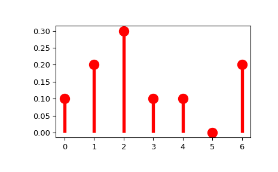

scipy.stats.rv_discrete¶
-
class
scipy.stats.rv_discrete(a=0, b=inf, name=None, badvalue=None, moment_tol=1e-08, values=None, inc=1, longname=None, shapes=None, extradoc=None, seed=None)[source]¶ A generic discrete random variable class meant for subclassing.
rv_discreteis a base class to construct specific distribution classes and instances for discrete random variables. It can also be used to construct an arbitrary distribution defined by a list of support points and corresponding probabilities.- Parameters
- afloat, optional
Lower bound of the support of the distribution, default: 0
- bfloat, optional
Upper bound of the support of the distribution, default: plus infinity
- moment_tolfloat, optional
The tolerance for the generic calculation of moments.
- valuestuple of two array_like, optional
(xk, pk)wherexkare integers andpkare the non-zero probabilities between 0 and 1 withsum(pk) = 1.xkandpkmust have the same shape.- incinteger, optional
Increment for the support of the distribution. Default is 1. (other values have not been tested)
- badvaluefloat, optional
The value in a result arrays that indicates a value that for which some argument restriction is violated, default is np.nan.
- namestr, optional
The name of the instance. This string is used to construct the default example for distributions.
- longnamestr, optional
This string is used as part of the first line of the docstring returned when a subclass has no docstring of its own. Note: longname exists for backwards compatibility, do not use for new subclasses.
- shapesstr, optional
The shape of the distribution. For example “m, n” for a distribution that takes two integers as the two shape arguments for all its methods If not provided, shape parameters will be inferred from the signatures of the private methods,
_pmfand_cdfof the instance.- extradocstr, optional
This string is used as the last part of the docstring returned when a subclass has no docstring of its own. Note: extradoc exists for backwards compatibility, do not use for new subclasses.
- seedNone or int or
numpy.random.RandomStateinstance, optional This parameter defines the RandomState object to use for drawing random variates. If None, the global np.random state is used. If integer, it is used to seed the local RandomState instance. Default is None.
Notes
This class is similar to
rv_continuous. Whether a shape parameter is valid is decided by an_argcheckmethod (which defaults to checking that its arguments are strictly positive.) The main differences are:the support of the distribution is a set of integers
instead of the probability density function,
pdf(and the corresponding private_pdf), this class defines the probability mass function,pmf(and the corresponding private_pmf.)scale parameter is not defined.
To create a new discrete distribution, we would do the following:
>>> from scipy.stats import rv_discrete >>> class poisson_gen(rv_discrete): ... "Poisson distribution" ... def _pmf(self, k, mu): ... return exp(-mu) * mu**k / factorial(k)
and create an instance:
>>> poisson = poisson_gen(name="poisson")
Note that above we defined the Poisson distribution in the standard form. Shifting the distribution can be done by providing the
locparameter to the methods of the instance. For example,poisson.pmf(x, mu, loc)delegates the work topoisson._pmf(x-loc, mu).Discrete distributions from a list of probabilities
Alternatively, you can construct an arbitrary discrete rv defined on a finite set of values
xkwithProb{X=xk} = pkby using thevalueskeyword argument to therv_discreteconstructor.Examples
Custom made discrete distribution:
>>> from scipy import stats >>> xk = np.arange(7) >>> pk = (0.1, 0.2, 0.3, 0.1, 0.1, 0.0, 0.2) >>> custm = stats.rv_discrete(name='custm', values=(xk, pk)) >>> >>> import matplotlib.pyplot as plt >>> fig, ax = plt.subplots(1, 1) >>> ax.plot(xk, custm.pmf(xk), 'ro', ms=12, mec='r') >>> ax.vlines(xk, 0, custm.pmf(xk), colors='r', lw=4) >>> plt.show()
Random number generation:
>>> R = custm.rvs(size=100)
- Attributes
random_stateGet or set the RandomState object for generating random variates.
Methods
rvs(*args, **kwargs)Random variates of given type.
pmf(k, *args, **kwds)Probability mass function at k of the given RV.
logpmf(k, *args, **kwds)Log of the probability mass function at k of the given RV.
cdf(k, *args, **kwds)Cumulative distribution function of the given RV.
logcdf(k, *args, **kwds)Log of the cumulative distribution function at k of the given RV.
sf(k, *args, **kwds)Survival function (1 -
cdf) at k of the given RV.logsf(k, *args, **kwds)Log of the survival function of the given RV.
ppf(q, *args, **kwds)Percent point function (inverse of
cdf) at q of the given RV.isf(q, *args, **kwds)Inverse survival function (inverse of
sf) at q of the given RV.moment(n, *args, **kwds)n-th order non-central moment of distribution.
stats(*args, **kwds)Some statistics of the given RV.
entropy(*args, **kwds)Differential entropy of the RV.
expect([func, args, loc, lb, ub, …])Calculate expected value of a function with respect to the distribution for discrete distribution by numerical summation.
median(*args, **kwds)Median of the distribution.
mean(*args, **kwds)Mean of the distribution.
std(*args, **kwds)Standard deviation of the distribution.
var(*args, **kwds)Variance of the distribution.
interval(alpha, *args, **kwds)Confidence interval with equal areas around the median.
__call__(*args, **kwds)Freeze the distribution for the given arguments.
support(*args, **kwargs)Return the support of the distribution.